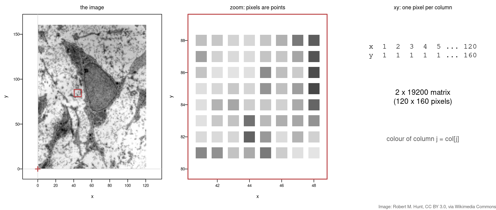
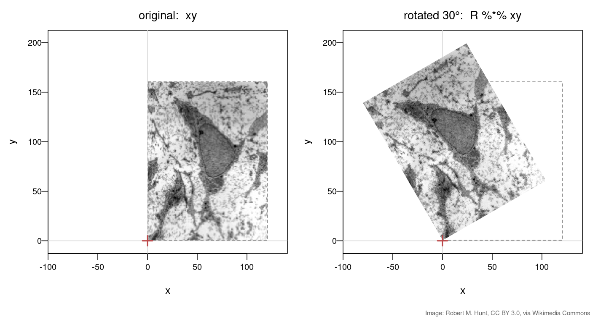
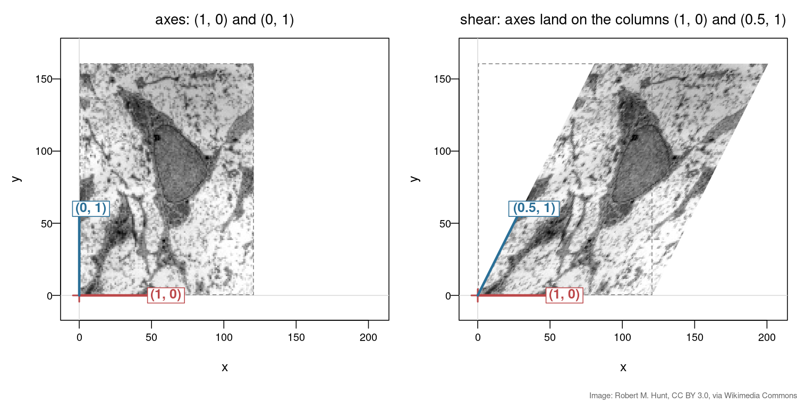
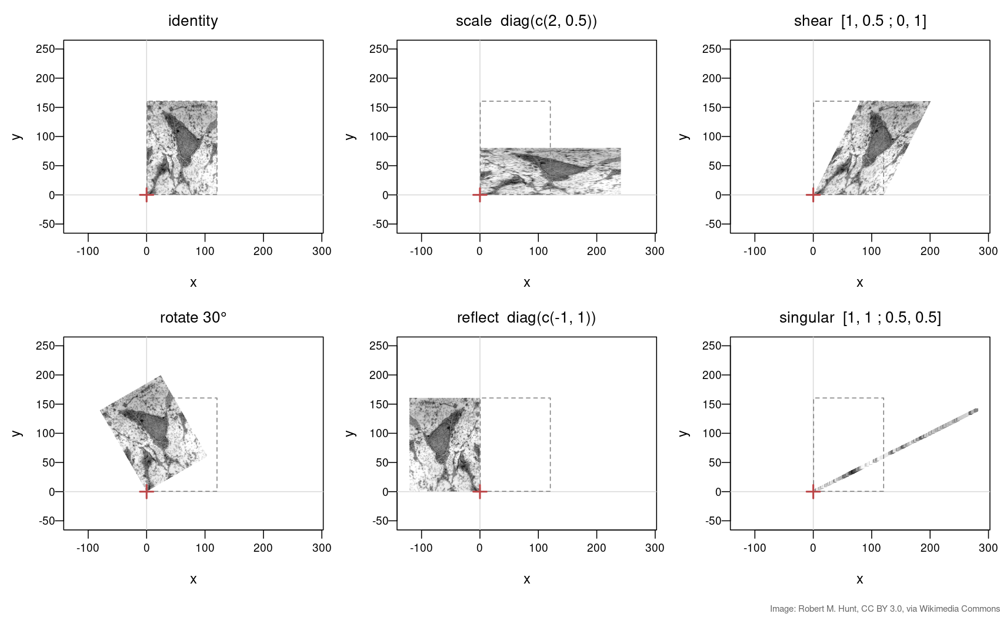
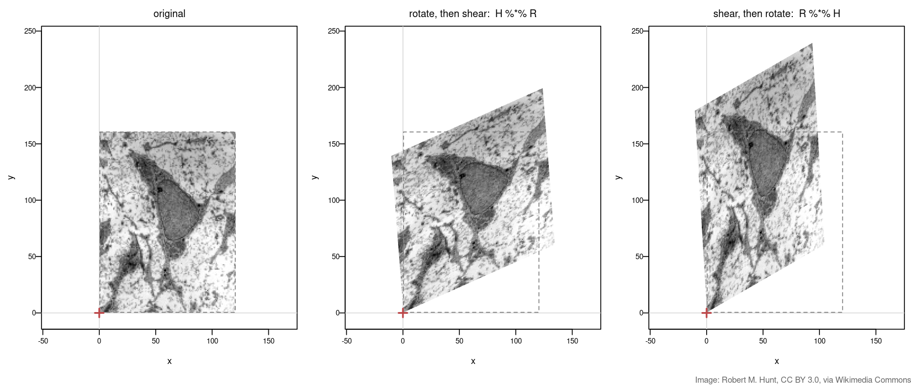
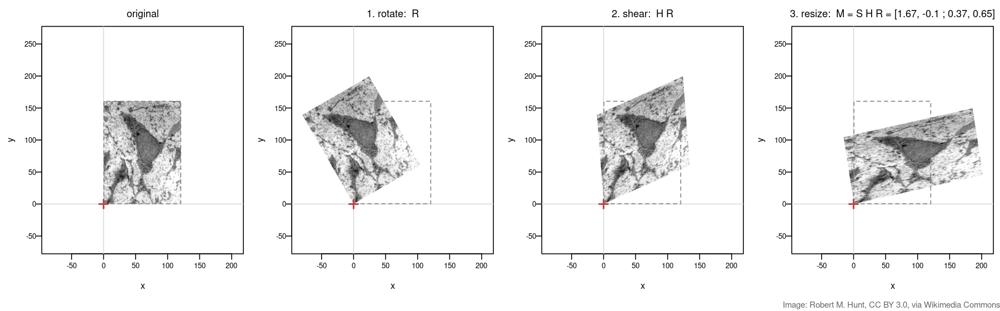
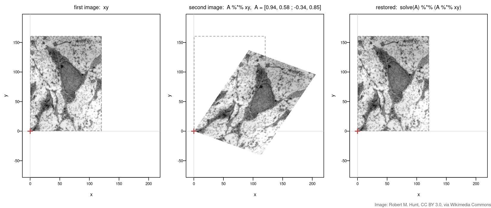

Linear algebra — Transforming images with matrices
In Matrices as transformations a matrix moved a handful of points. Today the same matrices move a whole image — a micrograph of a cell, 19 200 pixels at once.
solve(A).You need the jpeg package: install.packages("jpeg").
A greyscale image is a grid of intensities. Each pixel sits at a coordinate \((x, y)\), so the whole image is a 2 × N matrix of points — one pixel per column, exactly like a dataset of samples.
img <- jpeg::readJPEG("msc-small.jpg") # 160 x 120 grey levels, 0..1
img <- t(img[nrow(img):1, ]) # flip so up is up; now img[x, y]
xy <- t(expand.grid(1:nrow(img), 1:ncol(img))) # 2 x 19200: one pixel per COLUMN
col <- gray(img) # the grey level of each pixel
plot(t(xy), col = col, pch = 15, asp = 1)
Download msc-small.jpg. Image: transmission electron micrograph of a mesenchymal stem cell, Robert M. Hunt, CC BY 3.0, via Wikimedia Commons.
The rotation matrix \(R(\theta)\) from Matrices as transformations, applied to all 19 200 pixels in one %*%:
theta <- pi/6 # 30 degrees
R <- matrix(c(cos(theta), -sin(theta),
sin(theta), cos(theta)), nrow = 2, byrow = TRUE)
plot(t(R %*% xy), col = col, pch = 15, asp = 1)
Image: Robert M. Hunt, CC BY 3.0, via Wikimedia Commons.
A shear (skew) slides each row sideways in proportion to its height:
\[H = \begin{pmatrix} 1 & 0.5 \\ 0 & 1 \end{pmatrix}: \quad (x, y) \mapsto (x + 0.5\,y,\ y)\]
H <- matrix(c(1, 0.5,
0, 1), nrow = 2, byrow = TRUE)
plot(t(H %*% xy), col = col, pch = 15, asp = 1)The x-axis stays put (column 1 = \((1,0)\)); the y-axis tips over to column 2 = \((0.5, 1)\).

Image: Robert M. Hunt, CC BY 3.0, via Wikimedia Commons.
Every panel is plot(t(A %*% xy), ...) with a different \(A\). Predict each one from its columns first.

diag(c(-1, 1)): flips x — the cell is now mirrored.matrix(c(1, 1, 0.5, 0.5), 2, byrow = TRUE): both columns point the same way, so the whole image collapses onto a line. Information is lost and cannot be undone.det(A) — 1 for rotation, shear and diag(c(2, 0.5)); −1 for the reflection (flipped); 0 for the singular matrix. See the determinant slide in Matrices as transformations.Image: Robert M. Hunt, CC BY 3.0, via Wikimedia Commons.
Same two matrices, \(R\) (rotate 30°) and \(H\) (shear), applied in the two possible orders:
plot(t(H %*% R %*% xy), col = col, pch = 15, asp = 1) # rotate, then shear
plot(t(R %*% H %*% xy), col = col, pch = 15, asp = 1) # shear, then rotate
Image: Robert M. Hunt, CC BY 3.0, via Wikimedia Commons.
Rotate, then shear, then resize. Either move every pixel three times, or multiply the three small matrices first and move every pixel once:
S <- diag(c(1.5, 0.75)) # resize: wider and flatter
out1 <- S %*% (H %*% (R %*% xy)) # three passes over 19 200 pixels
M <- S %*% H %*% R # one 2 x 2 matrix for the whole pipeline
out2 <- M %*% xy # one pass
all.equal(out1, out2) # TRUE
Image: Robert M. Hunt, CC BY 3.0, via Wikimedia Commons.
The same cell is imaged a second time, but the section sits at an angle and is slightly skewed: the second image is \(A\,\mathbf{xy}\). If we know \(A\), its inverse undoes it — solve(A) from Linear systems in R.
A <- matrix(c( 0.94, 0.58,
-0.34, 0.85), nrow = 2, byrow = TRUE) # the misalignment
moved <- A %*% xy
restored <- solve(A) %*% moved
max(abs(restored - xy)) # about 1e-14: back where we started
Image: Robert M. Hunt, CC BY 3.0, via Wikimedia Commons.
| Concept | Key fact | R |
|---|---|---|
| Image as points | pixel coordinates as a 2 × N matrix; colours ride along | xy, col |
| Transform an image | one %*% moves every pixel |
plot(t(A %*% xy), ...) |
| Shear | one axis tips over: column 2 = \((k, 1)\) | matrix(c(1,k,0,1),2,byrow=TRUE) |
| Reflection | mirror image; \(\det = -1\) | diag(c(-1, 1)) |
| Singular | columns parallel → image collapses to a line; cannot be undone | det(A) == 0 |
| Order | \(HR \neq RH\): rightmost acts first | H %*% R vs R %*% H |
| Pipeline | many steps = one product matrix, applied once | M <- S %*% H %*% R |
| Undo | inverse transformation | solve(A) |
Next (Compensation & spectral unmixing): undoing the colour mixing in flow cytometry with solve().